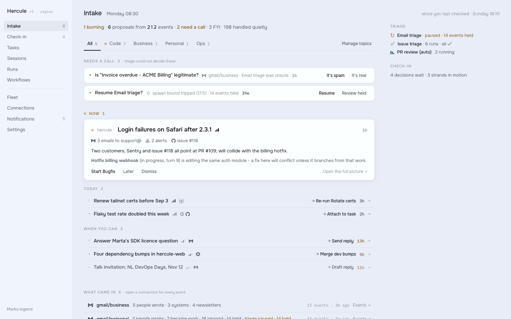
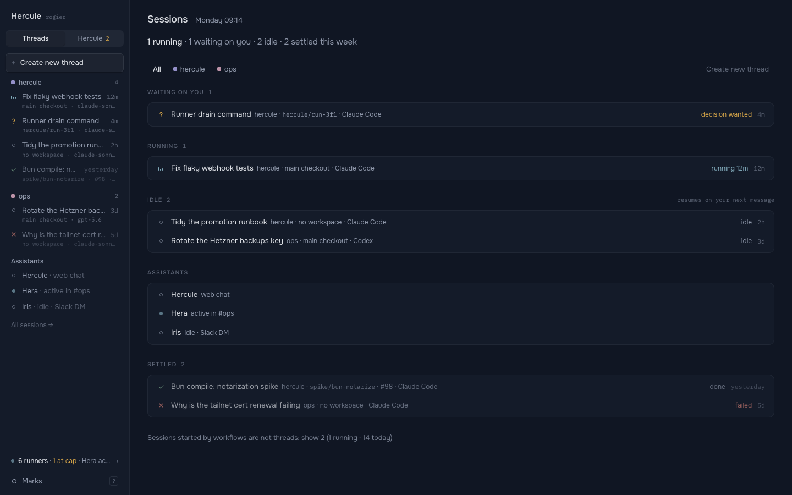
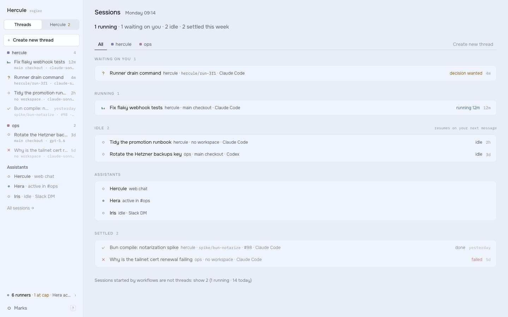

Metro
Every piece of work travels a line.
Hercule's strongest idea is provenance: every Proposal knows what it was made from. Metro draws it. Each Connection is a colored line. Events ride their lines into the Triage interchange; a Proposal is a station where lines meet; accepted work continues on Hercule's own ink line through Task, Run, Session and pull request. One diagram, from a 24px row glyph to a full network map, so you see where work came from and where it stands before you read a word.
Why this one
Pick Metro if the question you ask most is "why is this here, and what happens if I say yes?" Other directions show state. Metro shows state and cause in one glyph: a row's strip says four sources agree on a failure, and the answer row says yes starts a Run, a Thread and a pull request. The consequence sits next to the button, so decisions get faster.
- It trades away text density. A strip costs 26px per row; forty plain titles pack tighter than forty diagrams.
- It needs discipline. Hues belong to Connections alone. Break that once and the map turns into noise.
- Work you start yourself is one plain ink line. Metro shines brightest when events drive the day.
Every answer draws the stations it adds to the line. You see the consequence before you press.
Why it's 1000x better than today
Left: Hercule today. Right: the same moment in Metro.
What came in overnight
Today: eleven grey rows. "212 events" is a number inside a sentence.
- Attention
- 212 events arrive on eight colored lines. 198 end at a buffer stop you never have to read.
- Decision
- The lead Proposal is an interchange of four lines. Its answers show what each one adds.

A thread, at night
Today: a navy ground; where a session came from is grey text, or missing.
- Attention
- Warm charcoal. The thread's line runs under the title: four sources, the Proposal, this thread, the pull request.
- Decision
- The station you are at is ringed amber. The question and its answers sit right above the composer.
A decision from a Slack link
Today: "Start Bugfix · Later · Dismiss", three text links of equal weight.
- Attention
- One Proposal as a page: four source lines meet at the station you are asked about.
- Decision
- Three answer rows with keys. The primary one is heavier, and each shows its route.

Away from the desk
Today: one window, on one machine, only while it is open.
- Attention
- The lock screen carries the thread's line as a Live Activity: which station it is at, and for how long.
- Decision
- A notification answers with a thumb, bound to the same operation. A tap opens the Proposal as a sheet with three big answer rows.
The system
Transit signage: enamel-sign clarity, rounded line ends, interchange rings, calm grounds.Color doctrinefour rules; every screen follows all four
A line's hue appears on its line and nowhere else. The brand mark beside it stays monochrome.
Accepted work, and every provider, runs on ink. A Proposal is the station where colored lines hand over to it.
Open ring waits, filled dot works, cross fails. State colors live on words and 12px marks. They never touch a line.
A project is a shaded area on a map, a floor or a rug in the office. Never a dot, never a tinted sidebar.
Themesclick one; the book and every frame switch with it
Type
Overpass and Overpass Mono, after Highway Gothic: signage letters built to be read at speed. Self-hosted, OFL.
19 · titleCheckout fails for EU cards with 3-D Secure16 · leadFix 3-D Secure checkout for EU cards14.5 · bodySince deploy #1289, card payments that need 3-D Secure fail at checkout.12.5 · metaThread · webshop · studio-mac · Opus 5.510.5 · signRunning now · Fleet · TriageHierarchy comes from numerals and weight. Titles stop at 19px.
Shape
Soft enamel corners, rounded line ends. Nothing sharp.
Depth
Three shadows, one surface deep. No card sits inside a card.
Glass
Glass only where layers overlap: the composer, sheets, the quick panel. Blur 18px.
Motiontrains run on a timetable, not a spring
An event arrives. A train runs its line into Triage.
You decide. The points switch: the chosen track fills with ink in 220ms, the others fade.
Work is under way. The halo breathes, like a train at the platform.
Marks12px grid, one family
Icons16px grid, 1.4 stroke, round ends
Layoutthree panes on desktop; two at 1280 on the web
A row, taken apart
The signature: the line diagramthe same drawing at every size
Logo
An H made of two lines and the interchange that joins them.
App icon
Black enamel plate, the first two lines of any map. Fixed colors: the Dock has no theme.
Favicon
 nothing waits
nothing waitsThe tab gains an amber ring and a count, so a pinned tab is a signal.
Screens
Twenty-two pages, live. The theme switcher at the top reaches every frame.Three decisions wait. The count leads the tab title and the favicon gains its amber ring.
Intake · Hercule
rogier/webshop · GitHub
webshop-prod · Sentry
Nothing waits. Plain title, plain mark: a pinned tab you can ignore.
The office
The Fleet as a building. The lines do not stop at the door.At 10x
140 live sessions and 31,000 events a day. Lines thicken; they do not multiply.Adopting it
Today's tokens in packages/ui, and what they become.| Today | Light · dark | Metro | Enamel · Night | What changes |
|---|---|---|---|---|
| --bg | --bg | Window ground: sidebar and titlebar. Warm neutral; no dark theme is blue. | ||
| --surface | --surface | The main canvas, lighter than the ground, so content leads. | ||
| --raised | --raised, --sunken | Cards, composer, popovers. New --sunken for wells: code and inputs at rest. |
||
| --ink | --ink, --trunk | Text, and Hercule's own line. --trunk aliases it so a theme may part them later. |
||
| --muted | --muted | Darker in light, lighter in dark: 4.5:1 at 12.5px on every surface. | ||
| --faint | --faint | Now readable (54% and 65%). Today's 66% and 50% fail contrast for text. | ||
| --line | --line | Hairlines only. A diagram's line is never --line; it is a hue or --trunk. |
||
| --line-soft | --line-soft | Row separators. Unchanged in role. | ||
| --attn | --attn, --attn-soft | Waiting on you. Words, rings and the halo around the station you are at. | ||
| --fail | --fail | Always with the cross. Never on a line. | ||
| --live | --live | Green, not blue-grey: working reads as go. Always with the breathing dot. | ||
| --ok | --ok | Done words. The done mark itself is ink: finished work joins Hercule's line. | ||
| --project-* | --zone-* | Project dots go. A project is a shaded zone on maps, floors and rugs; hue belongs to Connections. | ||
| new | --ln-*, --casing | One hue per Connection type, tuned per theme. --casing is the gap drawn where lines cross. |
- Swap the tokens
packages/ui/src/styles.csstakes Metro's five themes;lightanddarkalias Enamel and Night Service. Drop--project-*. - Redraw the marks
packages/ui/src/marks/marks.tsxin Metro's shapes, and add<Strip>: the row glyph every list row starts with. - Map lines in one placeA
client-corefunction returns a Proposal's source lines, in order, from what it was made from. Intake, a thread and the office all call it. - Answer rows
packages/uigets<AnswerRow>with its route and key. Intake's lead card and check-in swap their text links for it. - The map and the line
apps/web: the network map on Intake, the lineage under a thread's title, the glass composer, and the tab title and favicon signals.
What this design asks the spec to change
/intake but no address for one Proposal; add /intake/<proposal id>.spec 14 · URL space